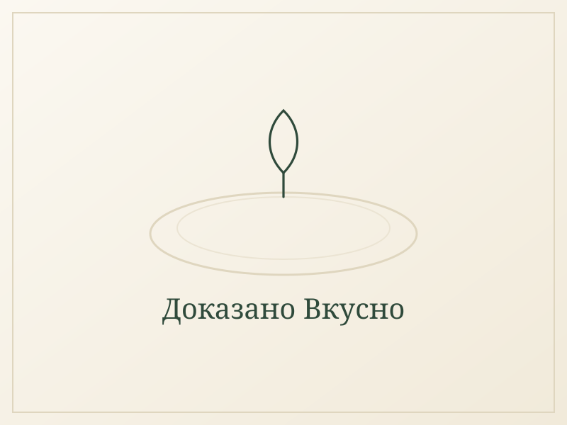

Леща яхния с моркови, червен пипер и куркума
Класическата българска леща, сготвена бавно до кремообразна мекота. Запръжката от брашно, червен пипер и куркума се прави направо при зеленчуците, а доматите влизат чак накрая, за да не стегнат лещата. Сервира се със сирене и маринован лук за киселинка и хрупкавост.

Съставки
- за яхнията
- 500 г леща
- 2–3 малки глави лук, нарязани на ситно
- 4–6 моркова, на кубчета
- 4–6 скилидки чесън, на тънки филийки
- 2–3 с.л. зехтин
- 80 г брашно
- 2 л вода
- 1 консерва (400 г) домати
- подправки
- 1–2 с.л. червен пипер
- 1 ч.л. куркума
- 1–2 ч.л. черен пипер
- 1 с.л. сух джоджен
- 3–4 ч.л. сол
- за сервиране
- ¼ връзка пресен магданоз, нарязан
- бяло сирене
- маринован лук
Начин на приготвяне
- Нарежете лука на ситно, морковите на кубчета и чесъна на тънки филийки. Изплакнете лещата хубаво под студена вода.
- Загрейте зехтина в тенджера с дебело дъно. Добавете лука, морковите и чесъна и ги задушете около 5 минути, колкото да омекнат леко и да ароматизират мазнината.
- Поръсете с черния пипер, брашното, червения пипер и куркумата и разбъркайте хубаво около минута, за да се разпределят и леко да се сготвят. Внимавайте червеният пипер да не загори — става горчив.
- Налейте водата постепенно, като бъркате непрекъснато, за да не останат бучки от брашното.
- Добавете лещата и разбъркайте, докато всичко леко закъкри.
- Намалете котлона почти до минимум и гответе бавно 40–50 минути, докато лещата омекне, без да се разпада. Разбърквайте от време на време и обирайте дъното, защото запръжката лесно залепва.
- Към края добавете доматите, джоджена и солта и оставете да покъкри още 5 минути.
- Изключете котлона и добавете пресния магданоз.
- Сервирайте с щедро количество натрошено бяло сирене и маринован лук.
Защо тази рецепта си заслужава
Защо е полезна
Лещата е едно от най-богатите на растителен протеин и фибри храни — около 24 г протеин и много фибри в една купа, без месо. Тя носи желязо, фолиева киселина и магнезий, а морковите добавят бета-каротин. Куркумата има противовъзпалително действие, а черният пипер подобрява усвояването ѝ.
Кога е най-подходящо да се яде
Като засищащ обяд или вечеря, особено в студените дни. Подходяща е и за постни дни — просто сервирайте без сиренето.
Какво дава на тялото
Една порция без сирене е около 451 ккал, 24 г протеин и 7 г мазнини. С около 40 г бяло сирене отгоре става около 555 ккал и 31 г протеин. Фибрите от лещата засищат за дълго и поддържат кръвната захар стабилна.
Как да я съхраняваш
В хладилник издържа 4 дни, а на втория ден е дори по-вкусна. При затопляне добавете малко вода, защото лещата се сгъстява. Може да се замрази на порции до 3 месеца.
Още рецепти в същия дух
Купа с кайма и сладък картоф
Подправена кайма и хрупкави кубчета сладък картоф, поднесени с настърган кашкавал и авокадо — 34 г протеин в една купа.
Тортила от тиквичка с пиле и авокадо
Тортила без брашно от тиквичка, моркови, яйца и кашкавал, завита с пилешко филе или кайма, авокадо, рукола и крема сирене.
Пиле с мед и чесън и сладък картоф
Хрупкаво пилешко филе, глазирано в сос от мед, соев сос и чесън, със сусам, печен сладък картоф и броколи — 54 г протеин на порция.